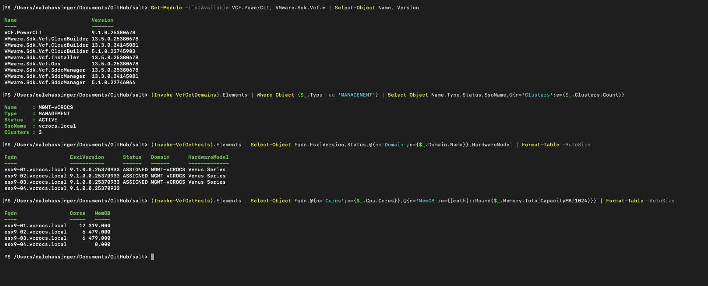

VCF PowerCLI 9.1 | VCF SDDC

VCF PowerCLI How-To | SDDC Manager and Operations
Managing VMware Cloud Foundation with VCF PowerCLI 9.1
- Connect to SDDC Manager, inspect the VCF Management Domain, Workload Domains, VCF Hosts, VCF Storage and VCF VMs.
- Use Operations to get the information you need across all vCenters within a VCF instance.
- After years of using VMware PowerCLI, what I appreciate most about VCF PowerCLI is how effortlessly it gathers insights across a complete VCF instance.
- Management Domain and all Workload Domains no longer requires looping through multiple vCenter targets—VCF PowerCLI handles it natively in your scripts.
- Connecting to SDDC Manager or Operations gives you immediate visibility across the entire environment—hosts, VMs, and datastores—no matter how many Workload Domains (vCenters) you have.
- There's no need to write code that loops through multiple vCenters or rely on Enhanced Linked Mode.
- There’s so much more you can do with VCF PowerCLI beyond the basics outlined here. Think of this post as a getting-started framework—now it’s your turn to dive in, experiment, and build something awesome.
PowerCLI Details:
- Every command in this guide was executed and verified against a live VCF 9.1.0.0.25371088
- Using VCF PowerCLI 9.1.0.25380678
- PowerShell was version 7.5.4. Sample output is from a VCF Lab.
Table of Contents:
- What you need
- Setup
- Connecting to SDDC Manager and Operations
- The Management Domain
- Hosts and Clusters
- The VCF-Managed Components
- Lifecycle: Releases, BOM, and Bundles
- Credentials, Tasks, and Licensing
- Gotchas
- Cmdlet Quick Reference
- VCF Health-Check Script
What you need:
| Requirement | Notes |
|---|---|
| PowerShell 7.x | Works on Windows, macOS, Linux |
| VCF.PowerCLI 9.1 | The current module for VCF 9.x |
VMware PowerCLI is now VCF PowerCLI
- As of VCF 9.x, VMware.PowerCLI has been renamed to VCF.PowerCLI.
- Broadcom's module description states: "This module is a continuation of the module VMware.PowerCLI... All existing cmdlets, modules, and automation scripts continue to work as expected."
Install PowerCLI:
Install-Module VCF.PowerCLI -Scope CurrentUser -Force -AllowClobber
VCF PowerCLI 9.1 adds three modules the old PowerCLI 13.3 did not have:
| Module | Purpose |
|---|---|
VMware.Sdk.Vcf.Ops | Native VCF Operations SDK — 822 cmdlets |
VMware.Sdk.Vcf.Installer | The VCF 9 Installer, which replaced Cloud Builder |
VMware.Vcf.SddcManager, VMware.Vcf.Sso | Higher-level wrappers above the generated SDK |
Confirm PowerCLI Modules installed:
Get-Module -ListAvailable VCF.PowerCLI, VMware.Sdk.Vcf.* | Select-Object Name, Version
Name Version
---- -------
VCF.PowerCLI 9.1.0.25380678
VMware.Sdk.Vcf.CloudBuilder 13.5.0.25380678
VMware.Sdk.Vcf.Installer 13.5.0.25380678
VMware.Sdk.Vcf.Ops 13.5.0.25380678
VMware.Sdk.Vcf.SddcManager 13.5.0.25380678
- If you are on PowerCLI 13.3, most of this guide still works, but the version properties are named differently, see Gotcha 1. Pin the module version explicitly so you know which one you are testing:
Import-Module VMware.Sdk.Vcf.SddcManager -RequiredVersion 13.5.0.25380678
Setup:
Lab and test environments use self-signed certificates. Do this first or every call fails:
Set-PowerCLIConfiguration -InvalidCertificateAction Ignore -Confirm:$false -Scope Session
Set your variables once so the rest of the guide is copy-paste:
$SddcManager = '192.168.100.45'
$VcfUser = 'administrator@vcrocs.local'
$VcfPass = 'VMware1!VMware1!'
- Do not commit credentials. If this file lives in a Git repo, keep real passwords out of it.
- Use
Read-Host -AsSecureString, a credential file, or a secrets vault for anything beyond a throwaway lab.
Connecting to SDDC Manager:
Import-Module VMware.Sdk.Vcf.SddcManager
Connect-VcfSddcManagerServer -Server $SddcManager -User $VcfUser -Password $VcfPass
Results from a successful connection to VCF SDDC Manager:
ServerUri : https://192.168.100.45/
User : administrator@vcrocs.local
IsConnected : True
Name : 192.168.100.45
Port : 443
ProductVersion : 9.1.0.0.25371088
AccessToken : eyJhbGciOiJIUzI1NiJ9...
RefreshToken : 0827fe5a-aff8-4126-8b23-a1d723cd7847
In scripts, you can suppress this output by adding " | Out-Null" at the end of the line:
Connect-VcfSddcManagerServer -Server $SddcManager -User $VcfUser -Password $VcfPass | Out-Null
The access token is valid for 1 hour. Reconnect when calls start returning 401.
Disconnect from SDDC Manager when finished:
Disconnect-VcfSddcManagerServer -Server $SddcManager
Connecting to Operations:
Set your variables once so the rest of the guide is copy-paste:
$OpsServer = '192.168.101.9'
$OpsUser = 'admin'
$OpsPass = 'VMware1!VMware1!'Connecting to Operations:
Import-Module VMware.Sdk.Vcf.Ops
Connect-VcfOpsServer -Server $OpsServer -User $OpsUser -Password $OpsPass
Results:
Name : 192.168.101.9
User : admin
ProductVersion : VCF Operations 9.1.0.0
IsConnected : True
Show VMs with Snaps using Operations:
(Invoke-VcfOpsGetResources -ResourceKind VirtualMachine -PageSize 5000).ResourceList | %{ $n=$_.ResourceKey.Name; $t=((Invoke-VcfOpsGetResourcePropertiesList -ResourceId ([string]$_.Identifier)).ResourcePropertiesList.Property|?{$_.Name -eq 'diskspace|snapshot|oldestSnapshotTimestamp'}).Value; if($t -gt 0){ [pscustomobject]@{ VM=$n; HasSnap='Yes'; AgeDays=[math]::Round(((Get-Date)-[datetimeoffset]::FromUnixTimeMilliseconds([long][double]$t).LocalDateTime).TotalDays,1) } } } | Sort-Object AgeDays -Descending
Results:
VM HasSnap AgeDays
-- ------- -------
minion01 Yes 1.400
minion02 Yes 1.400
The Management Domain:
The very useful VCF one-liner — show the Management Domain:
(Invoke-VcfGetDomains).Elements | Where-Object {$_.Type -eq 'MANAGEMENT'} | Select-Object Name,Type,Status,SsoName,@{n='Clusters';e={$_.Clusters.Count}}
Results:
Name Type Status SsoName Clusters
---- ---- ------ ------- --------
MGMT-vCROCS MANAGEMENT ACTIVE vcrocs.local 3
All domains — Management plus any Workload Domains:
(Invoke-VcfGetDomains).Elements | Select-Object Name,Type,Status,UpgradeState,IsManagementSsoDomain | Format-Table -AutoSize
Results:
Name Type Status UpgradeState IsManagementSsoDomain
---- ---- ------ ------------ ---------------------
MGMT-vCROCS MANAGEMENT ACTIVE AVAILABLE True
Detail for domain by Type = Management:
Invoke-VcfGetDomain -Id ((Invoke-VcfGetDomains).Elements | Where-Object {$_.Type -eq 'MANAGEMENT'}).Id | Select-Object Name,Type,Status,SsoName
Results:
Name Type Status SsoName
---- ---- ------ -------
MGMT-vCROCS MANAGEMENT ACTIVE vcrocs.local
Useful properties on a vcf domain object:
Id, Name, OrgName, Status, UpgradeState, UpgradeStatus, Type, Owners, Vcenters, VspClusters, SsoId, SsoName, IsManagementSsoDomain, Clusters, NsxtCluster, LicensingInfo, Capacity, Tags, ElmStatus, LifecycleManagementMode, IsNetworkSeparationEnabled, IsSecurityEnabled, IsPrimaryDomainForNsx, DnsServers, NtpServers, HcxManagers, AlbCluster
Show VCF Instance DNS and NTP:
[pscustomobject]@{ DNS=((Invoke-VcfGetDnsConfiguration).DnsServers.IpAddress -join ', '); NTP=((Invoke-VcfGetNtpConfiguration).NtpServers.IpAddress -join ', ') }
Results:
DNS NTP
--- ---
192.168.100.2, 192.168.100.3 time.google.com
Hosts and Clusters:
Every ESX host, its version, and which domain it is a member of:
(Invoke-VcfGetHosts).Elements | Select-Object Fqdn,EsxiVersion,Status,@{n='Domain';e={$_.Domain.Name}},HardwareModel | Format-Table -AutoSize
Results:
Fqdn EsxiVersion Status Domain HardwareModel
---- ----------- ------ ------ -------------
esx9-01.vcrocs.local 9.1.0.0.25370933 ASSIGNED MGMT-vCROCS Venus Series
esx9-02.vcrocs.local 9.1.0.0.25370933 ASSIGNED MGMT-vCROCS Venus Series
esx9-03.vcrocs.local 9.1.0.0.25370933 ASSIGNED MGMT-vCROCS Venus Series
esx9-04.vcrocs.local 9.1.0.0.25370933
- A host with a blank Domain/Status is in inventory but not assigned to a workload domain.
More example Host capacity scripts:
ESX Host Cores, CPU_GHz, MemGB, NICs:
(Invoke-VcfGetHosts).Elements | Select-Object Fqdn,@{n='Cores';e={$_.Cpu.Cores}},@{n='CPU_GHz';e={[math]::Round($_.Cpu.FrequencyMHz/1000,1)}},@{n='MemGB';e={[math]::Round($_.Memory.TotalCapacityMB/1024)}},@{n='NICs';e={$_.PhysicalNics.Count}} | Format-Table -AutoSize
Results:
Fqdn Cores CPU_GHz MemGB NICs
---- ----- ------- ----- ----
esx9-01.vcrocs.local 12 38.2 319 4
esx9-02.vcrocs.local 6 18.0 479 4
esx9-03.vcrocs.local 6 18.0 479 4
esx9-04.vcrocs.local 0.0 0 0
ESX Host Fqdn, Cores, MemGB:
(Invoke-VcfGetHosts).Elements | Select-Object Fqdn,@{n='Cores';e={$_.Cpu.Cores}},@{n='MemGB';e={[math]::Round($_.Memory.TotalCapacityMB/1024)}} | Format-Table -AutoSize
Results:
Fqdn Cores MemGB
---- ----- -----
esx9-01.vcrocs.local 12 319.000
esx9-02.vcrocs.local 6 479.000
esx9-03.vcrocs.local 6 479.000
esx9-04.vcrocs.local 0.000
ESX Host Fqdn, Status, Cores, MemGB:
(Invoke-VcfGetHosts).Elements | Where-Object {$_.Status -eq 'ASSIGNED'} | Select-Object Fqdn,Status,@{n='Cores';e={[int]$_.Cpu.Cores}},@{n='MemGB';e={[int]($_.Memory.TotalCapacityMB/1024)}} | Format-Table -AutoSize
Results:
Fqdn Status Cores MemGB
---- ------ ----- -----
esx9-01.vcrocs.local ASSIGNED 12 319
esx9-02.vcrocs.local ASSIGNED 6 479
esx9-03.vcrocs.local ASSIGNED 6 479
ESX Host Fqdn, Model, Sockets, Cores:
(Invoke-VcfGetHosts).Elements | Select-Object Fqdn,@{n='Model';e={$_.Cpu.CpuCores[0].Model}},@{n='Sockets';e={$_.Cpu.CpuCores.Count}},@{n='Cores';e={$_.Cpu.Cores}}
Results:
Fqdn Model Sockets Cores
---- ----- ------- -----
esx9-01.vcrocs.local 12th Gen Intel(R) Core(TM) i5-12600H 1 12
esx9-02.vcrocs.local 13th Gen Intel(R) Core(TM) i9-13900H 1 6
esx9-03.vcrocs.local 13th Gen Intel(R) Core(TM) i9-13900H 1 6
esx9-04.vcrocs.local 0
VCF Instance totals:
Total core count across every host, in one line:
((Invoke-VcfGetHosts).Elements.Cpu.Cores | Measure-Object -Sum).Sum
Results:
24
Results Labelled, so it reads as a report line rather than a bare number:
"Total cores: " + ((Invoke-VcfGetHosts).Elements.Cpu.Cores | Measure-Object -Sum).Sum
Results:
Total cores: 24
Full fleet capacity — hosts, cores, GHz, and memory in a single object:
$h=(Invoke-VcfGetHosts).Elements; [pscustomobject]@{Hosts=$h.Count; Cores=[int](($h.Cpu.Cores|Measure-Object -Sum).Sum); TotalGHz=[math]::Round((($h.Cpu.FrequencyMHz|Measure-Object -Sum).Sum)/1000,1); TotalMemGB=[int](($h.Memory.TotalCapacityMB|Measure-Object -Sum).Sum/1024)}
Results:
Hosts Cores TotalGHz TotalMemGB
----- ----- -------- ----------
4 24 74.200 1276
Broken out per workload domain — usually the more useful view:
(Invoke-VcfGetHosts).Elements | Group-Object {$_.Domain.Name} | Select-Object @{n='Domain';e={$_.Name}},@{n='Hosts';e={$_.Count}},@{n='Cores';e={[int](($_.Group.Cpu.Cores|Measure-Object -Sum).Sum)}}
Results:
Domain Hosts Cores
------ ----- -----
1 0
MGMT-vCROCS 3 24
To count only hosts CPU Cores actually in a domain:
((Invoke-VcfGetHosts).Elements | Where-Object {$_.Domain.Name}).Cpu.Cores | Measure-Object -Sum | Select-Object -ExpandProperty Sum
Results:
24
Clusters:
(Invoke-VcfGetClusters).Elements | Select-Object Name,PrimaryDatastoreType,IsDefault,IsStretched,Status | Format-Table -AutoSize
Results:
Name PrimaryDatastoreType IsDefault IsStretched Status
---- -------------------- --------- ----------- ------
CL-01 NFS False False ACTIVE
CL-02 NFS True False ACTIVE
Datastores attached to a cluster:
$cl = (Invoke-VcfGetClusters).Elements[0]; Invoke-VcfGetClusterDatastores -Id $cl.Id | Select-object Name,DatastoreType,TotalCapacityGB,FreeCapacityGB| Format-Table -AutoSize
Results:
Name DatastoreType TotalCapacityGB FreeCapacityGB
---- ------------- --------------- --------------
ESX9-01-2TB VMFS 1734.750 1385.673
SYN-HDD NFS 14287.656 11466.874
SYN-SSD-04 NFS 1821.094 1558.340
SYN-SSD-05 NFS 1821.094 1744.791
The VCF-Managed Components:
Lifecycle: Releases, BOM, and Bundles
Current system release:
Invoke-VcfGetSystemRelease | Select-Object Product,Version,ReleaseDate,Description
Results:
Product Version ReleaseDate Description
------- ------- ----------- -----------
VCF 9.1.0.0 2026-05-12T04:04:55Z VCF version 9.1.0.0
The full Bill of Materials — every component version VCF certifies as a matched set. This is the command that best explains the VCF BOM:
(Invoke-VcfGetSystemRelease).Bom | Select-Object Name,Version | Format-Table -AutoSize
Results:
Name Version
---- ----------------
SDDC_MANAGER 9.1.0.0.25371088
HOST 9.1.0.0.25370933
NSX_T_MANAGER 9.1.0.0.25318225
VCENTER 9.1.0.0.25370922
HCX 9.1.0.0.25318520
Upgrade bundles staged in the local depot and ready to apply:
(Invoke-VcfGetBundles).Elements | Where-Object {$_.DownloadStatus -eq 'SUCCESSFUL'} | Select-Object Version,@{n='Component';e={$_.Components[0].Type}},SizeMB | Sort-Object Component
Results:
Version Component SizeMB
------- --------- ------
9.1.0-25371105 DEPOT_SERVICE 547.773
9.1.0-25433460 HOST 711.186
9.1.0-25470810 NSX_T_MANAGER 6532.686
9.1.0-25470810 NSX_T_MANAGER 7720.010
9.1.0-25428926 SDDC_MANAGER 2463.135
9.1.0-25371088 SDDC_MANAGER 2334.502
Credentials, Tasks, and Licensing:
Credential inventory:
SDDC Manager is the credential vault for the whole fleet. Inventory it without exposing secrets:
(Invoke-VcfGetCredentials).Elements | Select-Object @{n='Resource';e={$_.Resource.ResourceName}},AccountType,CredentialType,Username | Format-Table -AutoSize
Resource AccountType CredentialType Username
-------- ----------- -------------- ---------------
vcf91sddc.vcrocs.local SYSTEM FTP backup
esx9-01.vcrocs.local SERVICE SSH svc-vcf-esx9-01
esx9-02.vcrocs.local SERVICE SSH svc-vcf-esx9-02
nsx01.vcrocs.local SYSTEM API admin
nsx01.vcrocs.local SYSTEM AUDIT audit
Summarize by type:
(Invoke-VcfGetCredentials).Elements | Group-Object CredentialType | Select-Object Name,Count
Name Count
---- -----
API 2
AUDIT 1
FTP 1
SSH 6
SSO 2
Tasks:
(Invoke-VcfGetTasks).Elements | Select-Object -First 10 Name,Status,CreationTimestamp | Format-Table -AutoSize
Results:
Name Status CreationTimestamp
---- ------ -----------------
Downloading Esx metadata, vibs and vendor add-ons FAILED 2026-08-10T12:19:38.439Z
Downloading Esx metadata, vibs and vendor add-ons FAILED 2026-08-09T12:19:07.295Z
Credentials rotate operation FAILED 2026-08-09T00:00:00.588Z
Failures only — the practical version:
(Invoke-VcfGetTasks).Elements | Where-Object {$_.Status -match 'Fail'} | Select-Object Name,Status,CreationTimestamp
- Isolated environments with no depot connectivity produce a daily stream of failed
Downloading Esx metadata...andSynchronize Inventory Versionstasks. That is expected offline, not a real fault.
Licensing
Invoke-VcfGetSystemLicensingInfo | Select-Object ResourceType,LicensingMode,SubscriptionStatus,IsRegistered,IsSubscribed
ResourceType LicensingMode SubscriptionStatus IsRegistered IsSubscribed
------------ ------------- ------------------ ------------ ------------
SYSTEM PERPETUAL UNSUBSCRIBED False False
Gotchas:
- The version property name depends on your module version.
- This is the single biggest trap when following older blog posts.
| Module | Version property | Type property |
|---|---|---|
VMware.Sdk.Vcf.SddcManager 13.5 (VCF PowerCLI 9.1) | Version | Type |
VMware.Sdk.Vcf.SddcManager 13.3 (PowerCLI 13.3) | _Version | _Type |
The 13.3 generator prefixed names that collide with reserved members using an underscore; 13.5
fixed it. Either way, Select-Object on the wrong name returns a blank column with no error.
# VCF PowerCLI 9.1 / module 13.5
(Invoke-VcfGetVcenters).Elements | Select-Object Fqdn,Version
# PowerCLI 13.3 / module 13.3
(Invoke-VcfGetVcenters).Elements | Select-Object Fqdn,_Version
The full Cpu object:
FrequencyMHz : 38246.39453125 total across all cores
UsedFrequencyMHz : 3012
Cores : 12 <- core count
CpuCores : {CpuCore} <- one entry per socket: Model, Manufacturer, FrequencyMHzPhysicalNics.Count is a genuine count (4 per host here). The inconsistency between the two is
exactly why you inspect before trusting a .Count:
$h = (Invoke-VcfGetHosts).Elements[0]; $h.Cpu | Format-List; $h.Memory | Format-List##### Cmdlet Quick Reference
| Task | Cmdlet |
|---|---|
| Connect | Connect-VcfSddcManagerServer |
| Disconnect | Disconnect-VcfSddcManagerServer |
| Workload domains | Invoke-VcfGetDomains / Invoke-VcfGetDomain -Id |
| ESXi hosts | Invoke-VcfGetHosts / Invoke-VcfGetHost -Id |
| Clusters | Invoke-VcfGetClusters / Invoke-VcfGetClusterDatastores |
| vCenter servers | Invoke-VcfGetVcenters |
| NSX managers | Invoke-VcfGetNsxClusters |
| NSX transport zones | Invoke-VcfGetNsxTransportZones |
| Edge clusters | Invoke-VcfGetEdgeClusters |
| SDDC Manager | Invoke-VcfGetSddcManagers |
| Current release + BOM | Invoke-VcfGetSystemRelease |
| Available upgrades | Invoke-VcfGetFutureReleases |
| Upgrade bundles | Invoke-VcfGetBundles |
| Credentials | Invoke-VcfGetCredentials |
| Tasks | Invoke-VcfGetTasks |
| Licensing | Invoke-VcfGetSystemLicensingInfo |
| Network pools | Invoke-VcfGetNetworkPool |
| Certificates | Invoke-VcfGetDomainCertificates -Id |
| Backup config | Invoke-VcfGetBackupConfiguration |
Find anything else:
Get-Command -Module VMware.Sdk.Vcf.SddcManager -Name '*Get*' | Select-String 'Cert'VCF Health-Check Script:
Save as Get-VcfSummary.ps1:
param(
[Parameter(Mandatory)][string]$Server,
[Parameter(Mandatory)][string]$User,
[Parameter(Mandatory)][string]$Password
)
$WarningPreference = 'SilentlyContinue'
Set-PowerCLIConfiguration -InvalidCertificateAction Ignore -Confirm:$false -Scope Session | Out-Null
Import-Module VMware.Sdk.Vcf.SddcManager
$conn = Connect-VcfSddcManagerServer -Server $Server -User $User -Password $Password
Write-Host "`nConnected to $($conn.Name) | VCF $($conn.ProductVersion)" -ForegroundColor Green
# Render tables at a fixed width. A non-interactive console defaults to 80 chars and
# Format-Table silently DROPS trailing columns that don't fit -- see Gotcha 11.
function Show($Title, $Data) {
Write-Host "`n--- $Title ---" -ForegroundColor Cyan
$Data | Format-Table -AutoSize | Out-String -Width 200 | Write-Host
}
Show 'WORKLOAD DOMAINS' (
(Invoke-VcfGetDomains).Elements |
Select-Object Name, Type, Status, SsoName, @{n='Clusters';e={$_.Clusters.Count}}
)
Show 'ESXi HOSTS' (
(Invoke-VcfGetHosts).Elements | Select-Object Fqdn, EsxiVersion, Status,
@{n='Domain'; e={$_.Domain.Name}},
@{n='Cores'; e={[int]$_.Cpu.Cores}},
@{n='MemGB'; e={[int]($_.Memory.TotalCapacityMB/1024)}}
)
# NOTE: $( ) not ( ) -- a grouping expression cannot contain an assignment
# followed by another statement. See Gotcha 13.
Show 'FLEET TOTALS' $(
$h = (Invoke-VcfGetHosts).Elements
[pscustomobject]@{
Hosts = $h.Count
Cores = [int](($h.Cpu.Cores | Measure-Object -Sum).Sum)
TotalGHz = [int](($h.Cpu.FrequencyMHz | Measure-Object -Sum).Sum / 1000)
TotalMemGB = [int](($h.Memory.TotalCapacityMB | Measure-Object -Sum).Sum / 1024)
}
)
Show 'CLUSTERS' (
(Invoke-VcfGetClusters).Elements |
Select-Object Name, PrimaryDatastoreType, IsDefault, Status
)
Show 'BILL OF MATERIALS' (
(Invoke-VcfGetSystemRelease).Bom | Select-Object Name, Version
)
Show 'BUNDLES READY TO APPLY' (
(Invoke-VcfGetBundles).Elements |
Where-Object { $_.DownloadStatus -eq 'SUCCESSFUL' } |
Select-Object Version, Type, SizeMB
)
Show 'FAILED TASKS (last 10)' (
(Invoke-VcfGetTasks).Elements |
Where-Object { $_.Status -match 'Fail' } |
Select-Object -First 10 Name, Status, CreationTimestamp
)
Show 'LICENSING' (
Invoke-VcfGetSystemLicensingInfo |
Select-Object ResourceType, LicensingMode, SubscriptionStatus, IsRegistered
)
Disconnect-VcfSddcManagerServer -Server $Server
Run it:
./Get-VcfSummary.ps1 -Server 192.168.100.45 -User administrator@vcrocs.local -Password 'VMware1!VMware1!'
Reference:
- VCF API docs: 'https://
/v1/api-docs' (live Swagger on the appliance) - VCF PowerCLI guide:
Get-Help Invoke-VcfGetDomains -Full